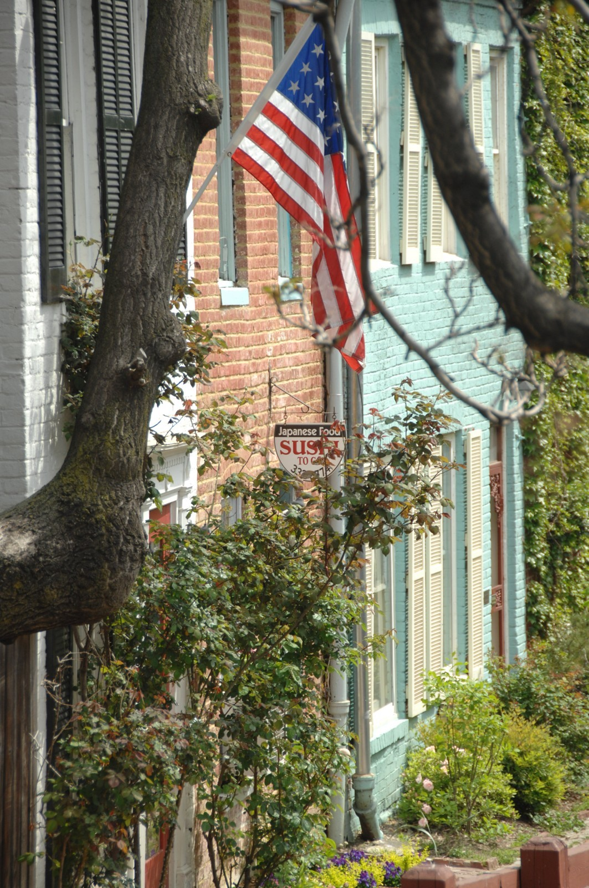
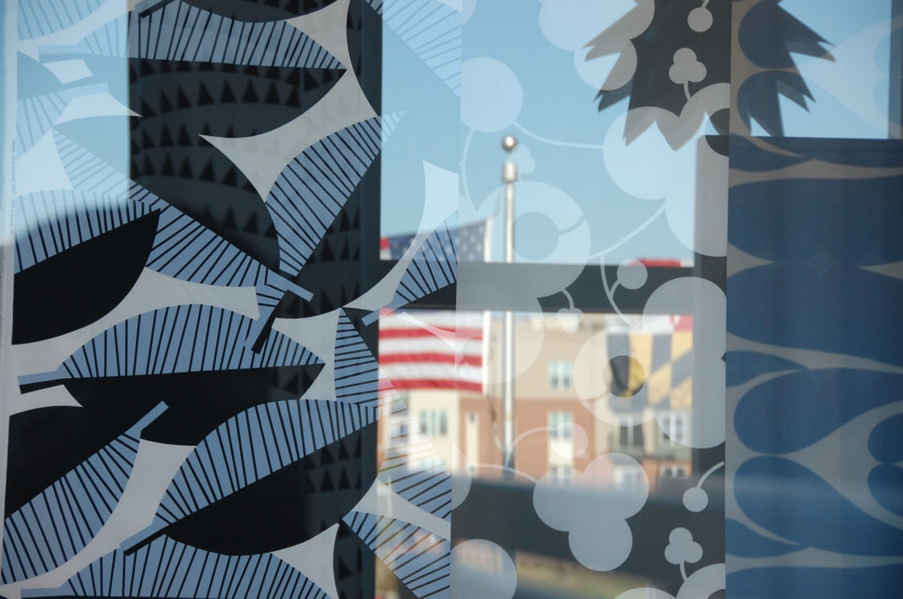
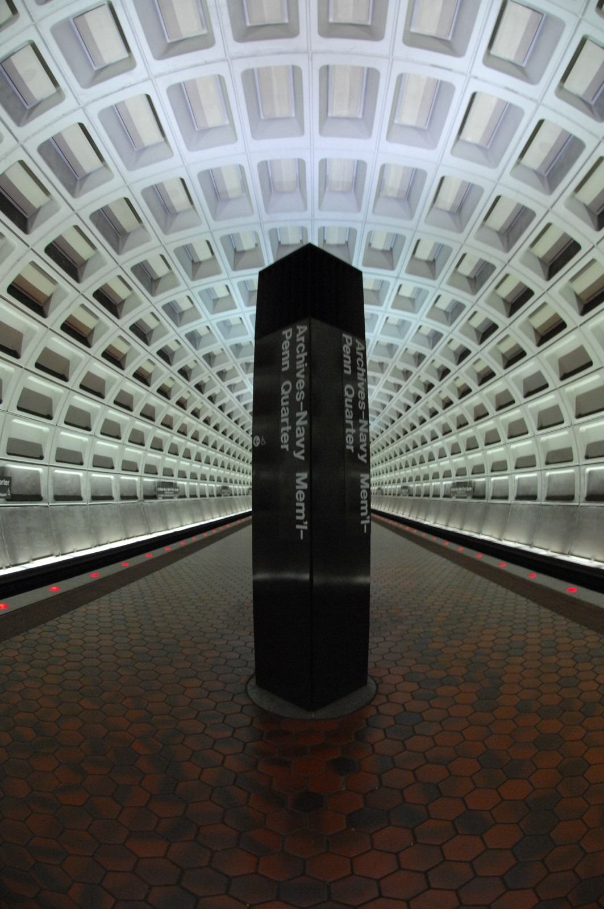
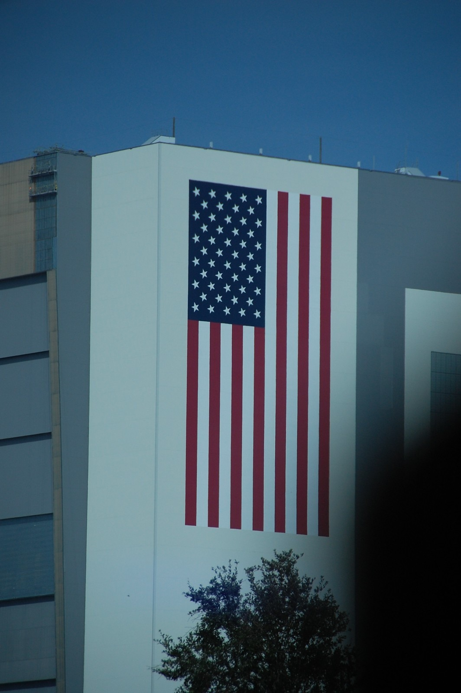
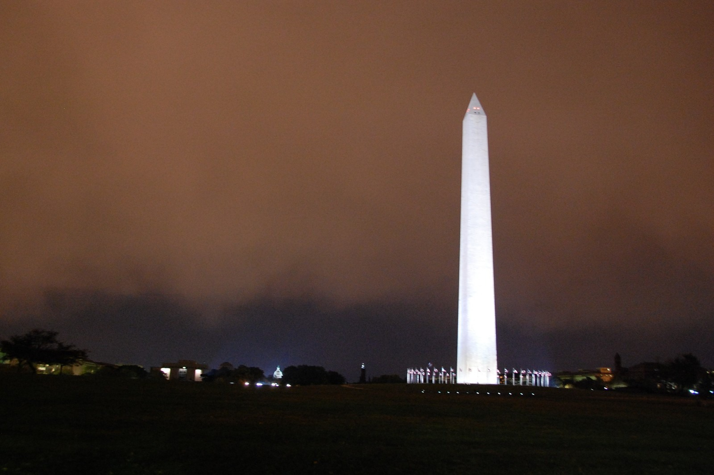
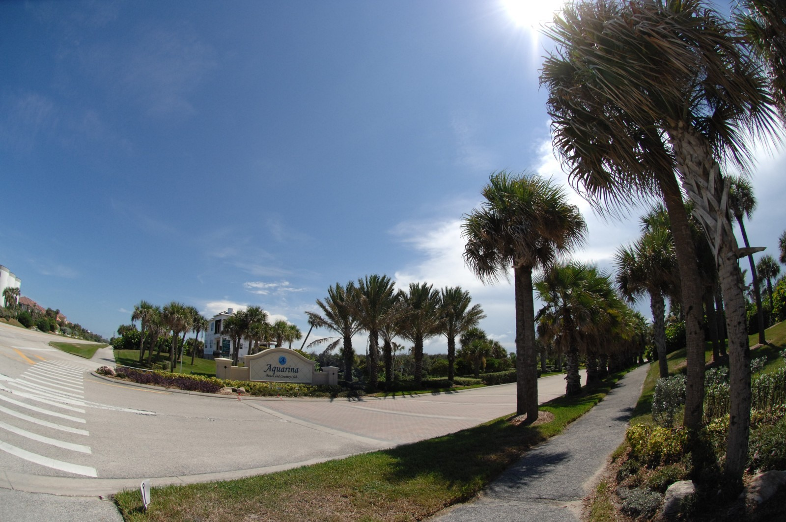
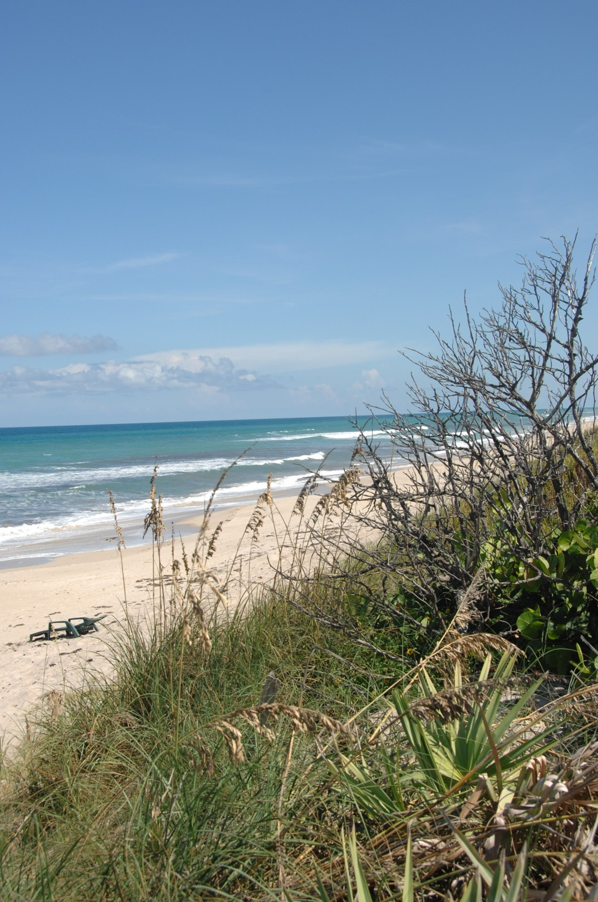

PHOTOGRAPHIC SERIES / 01
アメリカの、日常と輪郭。
2007–2008年のアメリカで撮影した街と風景。ワシントンD.C.からフロリダへ、星条旗のある街角、建物、海辺をまとめた写真集です。
2007–2008 / 7 photographs
街と建物
01 — CITY & STRUCTURE

星条旗のある街角
01 / 07Georgetown, Washington, D.C. · 2008
撮影データ
2008-04-19 · NIKON D2X · 1/320 s · F5.3 · ISO 200 · 120 mm
レンガ、窓、旗。街角に重なる色と形。


ガラス越しの街
02 / 07Washington, D.C. · 2008
撮影データ
2008-10-22 · NIKON D40 · 1/160 s · F5.3 · ISO 400 · 82 mm


地下に広がる幾何学
03 / 07Washington, D.C. · 2008
撮影データ
2008-10-19 · NIKON D2X · 1/3 s · F7.1 · ISO 800 · 10.5 mm


大きな星条旗
04 / 07Kennedy Space Center, Florida · 2008
撮影データ
2008-11-14 · NIKON D40 · 1/1000 s · F5.6 · ISO 320 · 170 mm


ワシントン記念塔
05 / 07Washington, D.C. · 2008
撮影データ
2008-10-29 · NIKON D40 · 1/3 s · F5 · ISO 1600 · 22 mm
南の海辺
02 — LIGHT & COAST

南の街の光
06 / 07Florida · 2007
撮影データ
2007-08-26 · NIKON D2X · 1/2500 s · F5.6 · ISO 400 · 10.5 mm


砂丘の向こうへ
07 / 07Florida · 2007
撮影データ
2007-08-26 · NIKON D2X · 1/400 s · F9 · ISO 200 · 31 mm
小山 洋の写真
自然、光、建物、観測の現場から選んだ代表作品。